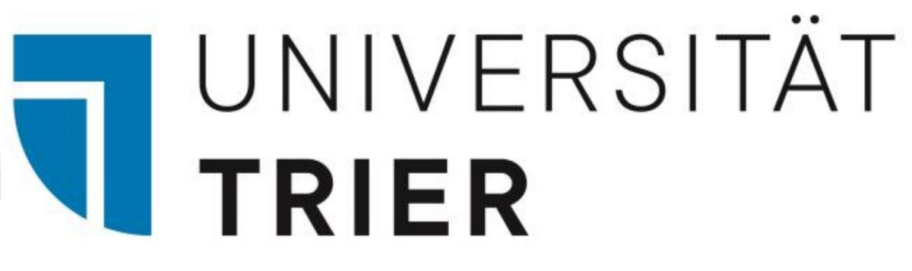
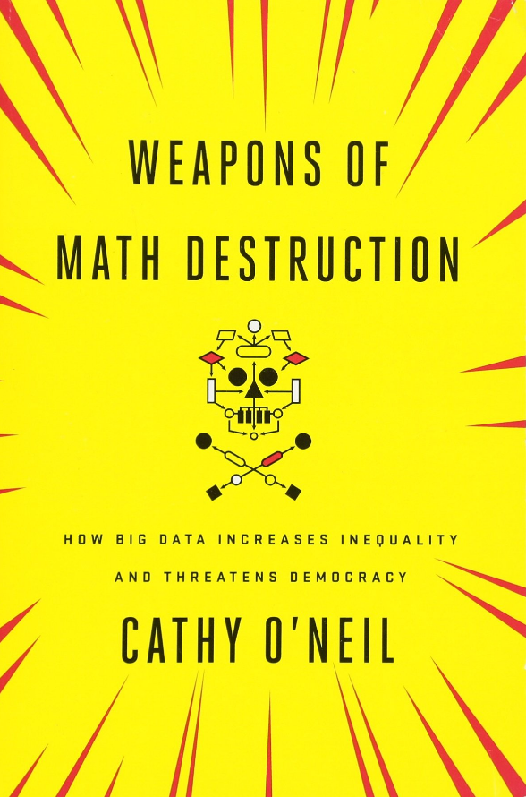
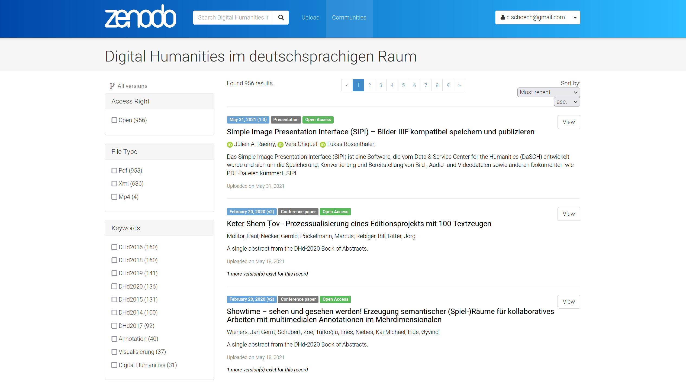
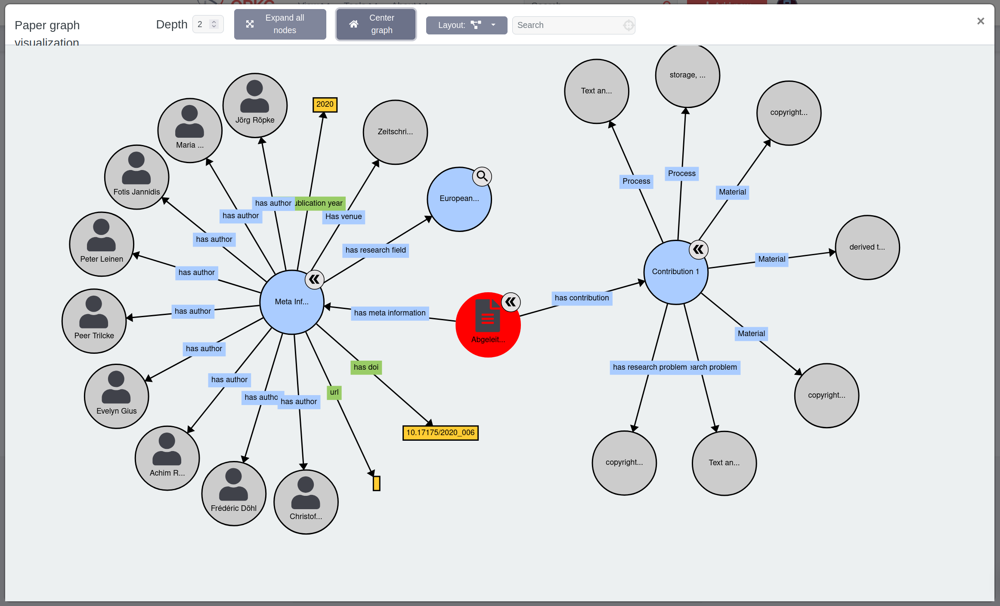
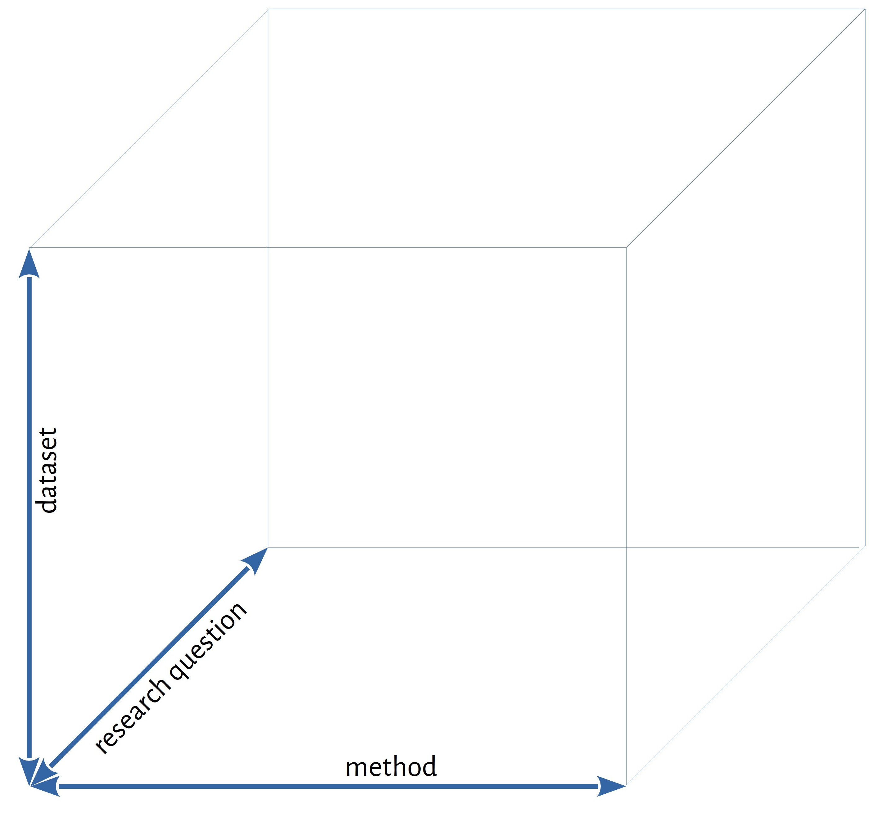
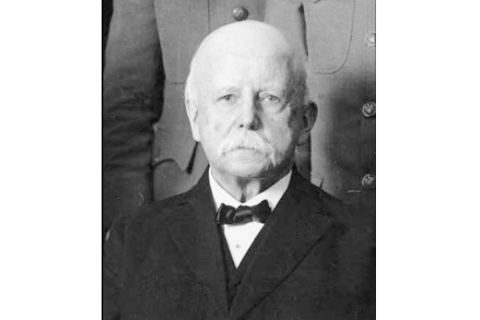
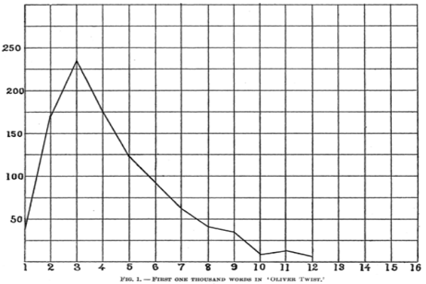
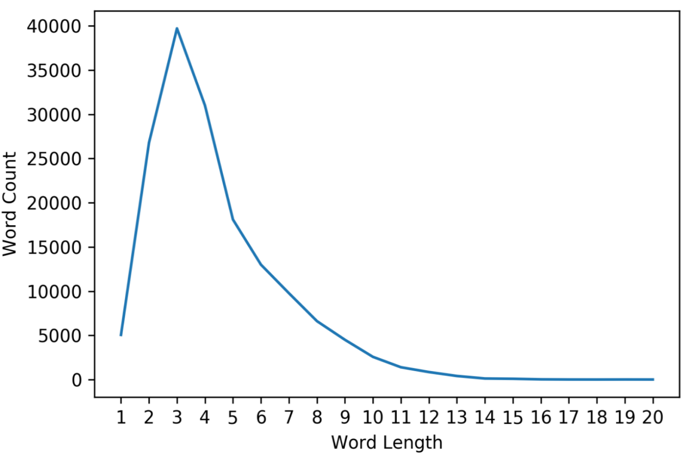
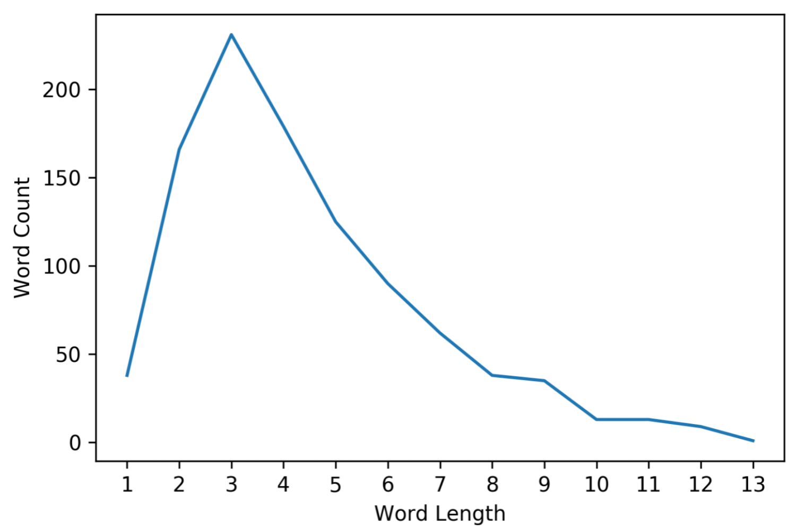

# Digital Humanities und/als Open Science <br/> <hr/> <br/> <p>Christof Schöch (Trier)</p> <p>Ringvorlesung Geisteswissenschaften und Informatik im Dialog. Aktuelle Perspektiven der Digital Humanities</p> <p>8. November 2021</p> <p><a href="https://christofs.github.io/dhos/">christofs.github.io/dhos</a></p> <hr/> </img> <img data-src="img/basics/tcdh-slim.png" height="80"></img> -- ## Einstieg --- ### Digital Humanities und/als Open Science * Ausgangslage: Im Selbstverständnis der DH gibt es eine privilegierte Verbindung zwischen DH und Open Science <!-- .element: class="fragment" data-fragment-index="1" --> * Das wirft Fragen auf <!-- .element: class="fragment" data-fragment-index="2" --> * Wie gestaltet sich diese Verbindung aber derzeit tatsächlich? * Und was bedeutet es, Digital Humanities als Open Science zu denken? * Fokus heute auf zwei ausgewählte Bereiche <!-- .element: class="fragment" data-fragment-index="3" --> * Open Access in den DH * Reproduzierbarkeit ::: - Selbstverständnis: DH = OS - Fragen: nennen! - Fokus auf zwei Bereiche, mit denen ich mich beschäftigt habe (andere sind auch wichtig!) - (A) Open Access: in den DH allgemein - (B) Reproduzierbarkeit: insbesondere in den CLS - Zwei Perspektiven heute - (1) Wo stehen wir eigentlich heute? - (2) Was kann man tun und warum sollte man es tun? - Titel - ("und"): es gibt eine Verbindung; wir machen das gelegentlich - ("als"): Wir denken DH konsequent von Open Science aus -- ## Digital Humanities<br/>und/als Open Access --- ### Was ist mit Open Access gemeint? <font size="+3"> >By 'open access' to this literature, we mean its free availability on the public internet, permitting any users to <span style="background-color:yellow">read, download, copy, distribute, print, search</span>, or link to the full texts of these articles, crawl them for indexing, pass them as data to software, or use them for any other lawful purpose, <span style="background-color:yellow">without financial, legal, or technical barriers</span> other than those inseparable from gaining access to the internet itself. The only constraint on reproduction and distribution, and the only role for copyright in this domain, should be to <span style="background-color:yellow">give authors control over the integrity of their work and the right to be properly acknowledged and cited</span>. <br/><br/> (Quelle: [Budapest Open Access Initiative](https://www.budapestopenaccessinitiative.org/), 2001, CC-BY.) </font> ::: - Die Erklärung ist 20 Jahre alt! - Die etwas neuere "Berliner Erklärung" wurde erst 2018 vom DHd-Verband unterzeichnet! - Die Praxis der DH ist aber gar nicht mal so schlecht, siehe Zeitschriften --- ### Überblick über OA in den DH <font size="-1"> |Zeitraum|Zeitschrift| Open Access| Modalitäten| |---|---|---|---| |1966-2017|CandH/LRE|Subskription|no OA| |1986-|LLC/DSH|hybrid|OA-via-APC/ADHO | |1994-|HandC/IJHAC|hybrid|OA-via-APC| |1999-2011|JCP|OA|kostenfrei| |2007-|DHQ|OA|kostenfrei| |2011-2018|JDH|OA|kostenfrei| |2011-|JTEI (TEI-C)|OA|kostenfrei| |2014-|JDMDH|OA|kostenfrei| |2015-2020|FinDH|OA|APC| |2015-|JOHD|OA|moderater APC| |2015-|DS (CSDH/SCHN)|OA|kostenfrei| |2016-|CA|OA|kostenfrei| |2016-|ZfdG| OA| kostenfrei | |2017-|UD (AIUCD)|OA|kostenfrei| |2019-|IJDH|hybrid|APC/DEAL | |2020-|HD (Humanistica)|OA|kostenfrei| |2021-|JDHist|OA|kostenfrei| |2022-|JCLS|OA|kostenfrei| </font> ::: - Insgesamt sind hier 18 Zeitschriften chronologisch verzeichnet - Ich bitte die Abkürzungen zu entschuldigen, es geht mir aber onehin um den Trend - DHQ war 2007 der Pionier mit kostenfreiem OA - seitdem nur noch in Ausnahmefällen anders: Frontiers in DH; nicht mehr aktiv; JODH auch. - Und in jüngerer Zeit, als Outlier, das International Journal of DH; mal sehen. --- ### Weitere Aspekte des Status quo * Konferenzen: Abstracts im OA <!-- .element: class="fragment" data-fragment-index="1" --> * OA gleichbedeutend mit "kostenfreies PDF" <!-- .element: class="fragment" data-fragment-index="2" --> * Wissenschaftliches Bloggen <!-- .element: class="fragment" data-fragment-index="3" --> * Mikroblogging (Twitter) <!-- .element: class="fragment" data-fragment-index="4" --> * DHd-AG 'Digitales Publizieren': für OA und offene Formate <!-- .element: class="fragment" data-fragment-index="5" --> * Wenig Versuche, OA auch mit Open Data zusammenzudenken <!-- .element: class="fragment" data-fragment-index="6" --> ::: - Konferenzen: DH, DHd, CHR, DHBenelux uvm. machen das so - Bloggen: offene Wissenschaftskommunikation, de.hypotheses.org - Twitter: DH-Szene, Digitale Identität, Echoraum - OA und Open Data: Publikationen als Daten! --- ### DH und OA: Modest Proposal * 'Open Access für die Maschinen' oder: Erkenntnisse aus der Forschungspraxis auch in der Publikationspraxis umsetzen! <!-- .element: class="fragment" data-fragment-index="1" --> * Verschiedene Aspekte<!-- .element: class="fragment" data-fragment-index="2" --> * Maschinenlesbare Metadaten: mit Normdaten (ORCID, GND, TaDiRAH, CrediT, etc.)<!-- .element: class="fragment" data-fragment-index="3" --> * Offene und semantische Datenformate für die Texte: XML (jTEI, JATS, etc.)<!-- .element: class="fragment" data-fragment-index="4" --> * Normdaten für die Entitäten im Text (GND, Wikidata, TGN, etc.)<!-- .element: class="fragment" data-fragment-index="5" --> * Semantic Abstract / Linked Open Data: Kernaussagen als Triples <!-- .element: class="fragment" data-fragment-index="6" --> --- ### Linked Open Data  <br/> <small> ISBN:9780141985411 ... * HAS_TITLE "Weapons of Math Destruction" * HAS_PUBLICATION_YEAR "2016" * HAS_SUBJECT "Big Data" * MENTIONS "Sense Networks" * HAS_THESIS {"Big Data" REINFORCES "discrimination"} * HAS_CONCLUSION {"AI" REQUIRES "regulation"} </small> --- ### Chancen und Herausforderungen * Welche Vorteile oder Nutzungsszenarien gibt es dafür<!-- .element: class="fragment" data-fragment-index="1" --> * Semantisch unterstütze Suche nach Publikationen * Zitations- und Metadaten-basierte Publikationsnetzwerke * Vorstrukturierung von Forschungsständen * Viel reichhaltigere, datenbasierte Foschungsgeschichte * Herausforderungen<!-- .element: class="fragment" data-fragment-index="2" --> * Technische Infrastruktur, die das alles erleichtert (Zusatzaufwand!) * Einsicht, dass es überhaupt wünschenswert ist ::: - Wir arbeiten ja in der Digitalen Edition oder digitalen Lexikographie soweit es geht mit offenen Standards - Für Interoperabilität, Nachhaltigkeit, Nutzbarkeit von Standardtools, Maschinenlesbarkeit uvm. - Das sollten wir endlich auch konsequent im Publikationswesen nutzen! - Bei den Entitäten: Auch Datenformate, Datensets, Tools, Methoden etc. - Drei Beispiele, die in die richtige Richtung gehen --- ### Beispiel 1: Konferenzabstracts von DH/DHd </img> https://zenodo.org/communities/dhd/ (DHd) ::: - natürlich, wie schon erwähnt, OA - mit: XML, TaDiRAH (aber kein BibTeX!) - Das muss kontinuierlich weiterentwickelt werden - Ab nächstem Jahr: ORCID Autor:innen, dann GND für Institutionen - Erleichtert auch Indexierung in DBLP, Index of DH Conferences --- ### Beispiel 2: Digitale Kunstgeschichte </img> https://doi.org/10.11588/arthistoricum.663 (HeiUP) ::: - Buch aus dem Kontext des SPP "Das digitale Bild" - OA bei HeiUP erschienen (Kohle und Effinger) - Alle Beiträge sind semantisch annotiert (Entitäten, Begriffe) mit Wikidata-Links - Ein spannendes Experiment, das den Aufwand der Sache zeigt. --- ### Bsp. 3: Open Research Knowledge Graph </img> https://www.orkg.org/orkg/ (TIB) ::: - Super Idee: Papers als semantische Tripel beschreiben - Wird auch durch ML unterstützt - Aber: nur 57 Papers aus den Geisteswissenschaften eingetragen! - Idee: Die Papers der DHd-Konferenzen dort importieren - Das ist aber alles nur die Discovery-Ebene: Open Science ist viel mehr, zum Beispiel "Reproduzierbarkeit" -- ## Digital Humanities<br/>und/als Reproduzierbarkeit --- ### Was ist Reproduzierbarkeit? <font size="+4"> <br/> Meta-Studien <br/> <br/> Shared tasks Evaluation <br/> <br/> <strong><span style="background-color:yellow">Reproduzierbarkeit</span></strong> <br/> <br/> Peer-Review Open Science <br/> <br/> Transparenz Benchmarking </font> ::: - Reproduzierbarkeit ist verbunden mit anderen Aspekten, aber eben auch distinkt - Reproduzierbarkeit kann man in zwei Perspektiven betrachten - (a) retrospektiv: Welche Art von Reproduktion einer früheren Arbeit leistet ein Artikel? - (b) prospektiv: Zu welchem Grad könnte ein Artikel zukünftig reproduziert werden? --- ### Warum ist Reproduzierbarkeit wichtig? * Warum ist Reproduzierbarkeit relevant? <!-- .element: class="fragment" data-fragment-index="1" --> * Bedingung für Vertrauen in und Verlässlichkeit von Forschung * Ermöglicht es, Generalisierbarkeit und Robustheit von Forschung zu demonstrieren * Warum ist das Thema aktuell? <!-- .element: class="fragment" data-fragment-index="2" --> * Seit etwa 2015 wird das Thema viel diskutiert * Zuerst in der Biomedizin und Psychologie * In jüngerer Zeit auch in NLP und DH (CLS) ::: - Grundlegende Idee: Man bestätigt Forschungsergebnisse, indem man Studien unabhängig wiederholt - Das ist aber schwieriger als gedacht, in der Biomedizin, Biologie, Psychologie, etc. (and CLS, recently) - In den GW argumentieren wir oft mit der "Intersubjektiven Plausibilität" oder mit nachvollziehbarer Argumentation und stützende, repräsentative Beispiele - In den Digital Humanities funktioniert das anders, weil mit Daten und Code gearbeitet wird - (a) Statt klarer Argumentation (oder zusätzlich ;-) braucht es ausführbaren Code - (b) Statt repräsentativer Beispiele gibt es graphische Darstellungen, die die Ergebnisse zusammenfassen. Beides sind Vereinfachungen! - Daten, Code und Ergebnisse zu prüfen wird dadurch notwendig und möglich zugleich --- ### Reproduzierbarkeit in den DH:<br/>Aktueller Stand * Technische Infrastruktur <!-- .element: class="fragment" data-fragment-index="1" --> * Vorhanden: Github oder Gitlab, Zenodo oder Figshare, Notebooks und Binder * Nutzung hängt von individueller Initiative ab * Rechtsrahmen und Einstellungen <!-- .element: class="fragment" data-fragment-index="2" --> * Urheberrecht und Schutz der Privatsphäre können Hindernisse sein * Oft werden aber weit weniger Daten publiziert, als möglich wäre * Konsequenz <!-- .element: class="fragment" data-fragment-index="3" --> * Oft nicht möglich, Daten und Code zu finden * Oft schwierig, den Code zum Laufen zu bringen ::: - Infrastruktur: Repos werden oft genutzt, Zenodo seltener, Binder kaum - Rechtsrahmen: Oft versteckt man sich hinter dem Urheberrecht - Oder die Leute denken nicht daran, dass sie Metadaten, Zwischendaten, Modelle publizieren können - Die Journals (siehe oben) fordern nicht ausreichend klar die Publikation von Daten und Code --- ### Vorschlag einer Typologie von Reproduzierbarkeit  ::: - Verwirrende Terminologie macht die Sache auch nicht einfacher - Typologie = Versuch einer konzeptionellen Klärung (Begriffe sind sekundär) - Drei Dimensionen: Forschungsfrage, Methode, Datensatz - Jede Dimension kann identisch, etwas anders, oder komplett unterschiedlich sein - Jeder prototypische Fall hat bestimmte Funktionen und Bedingungen --- ### Typologie (gleiche Forschungsfrage) <img height="500" data-src="img/replication-typology-a.jpg"> ::: - Schauen wir uns den Fall der gleichen Forschungsfrage einmal genauer an - Gleiche Methode und gleiche Daten: replication (of the experiment); sehr hohe Anforderungen, wenig neue Erkenntnis; außer Qualitätscheck - Gleiche Methode, andere Daten: reproduction (of the results): hohe Anforderungen (Code); prüft die Generalisierbarkeit; - Andere Methode, gleiche Daten: re-analysis (of the data): hohe Anforderungen (Daten); prüft die Robustheit; - (Den Teil des Würfels mit anderen Forschungsfragen lassen wir mal beiseite.) --- ### Beispiel 1: Nan Z. Da 2019 https://doi.org/10.1086/702594 ::: - Sehr kontroverser Artikel ("The Computational Case against CLS") - Berichtet von großer Mühe, Daten und Code ausfindig zu machen - Zeigt m.E., dass das Thema einen Community-basierten und/oder institutionellen Ansatz erfordert --- ### Beispiel 2: Mendenhall (1887, 2015)   <br/>  <p><small>Stéfan Sinclair und Geoffrey Rockwell: Epistemologica, 2015-2019, <a href="https://github.com/sgsinclair/epistemologica/">https://github.com/sgsinclair/epistemologica/</a>, zu T. C. Mendenhalls "The Characteristic Curves of Composition" (1887). </small></p> ::: - An diesem Beispiel und an anderen Erfahrungen ist mir deutlich geworden: identische Wiederholung ist nützlich, aber nciht sehr spannend - Wirklich spannend wird es, wenn man Daten und Code anfängt, zu bearbeiten und zu variieren - Dann lernt man erst richtig etwas - Das hat sich auch bei Replikations-Versuchen in der Lehre gezeigt. --- ### Bespiel 3: Spitzer über Racine <a href="img/signifikanz.svg"><img height="500" data-src="img/signifikanz.svg"></a> <br/><small>Schöch (2021) repeating Spitzer (1928) on Racine (17th-century)</small> ::: - Typisch (und spezifisch?) für die CLS, dass die Grenze zwischen Analog und Digital oft überschritten wird; hier besonders klar (1928 vs. 2021) - Das ist ein relativ komplexer Aufsatz, der verschiedene Reprouzierbarkeits-Typen kombiniert - Erstmal geht es nur um die strikte Replikation - Dann wir der Datensatz verändert / erweitert: Reproduktion - Dann wird auch die Methode verändert: re-analyse / follow-up research --- ### Lektionen für Open Science in den DH * Strategische Ebene <!-- .element: class="fragment" data-fragment-index="1" --> * Die Typologie hilft dabei, Reproduzierbarkeit als Thema der DH zu etablieren * Sie macht deutlich: Open Science => hochwertige Forschung * Wen geht Reproduzierbarkeit etwas an? <!-- .element: class="fragment" data-fragment-index="2" --> * Einerseits individuelle Forschenden: Daten und Code veröffentlichen * Aber auch eine Frage der Community / Institutionen: Systematische Reproduzierbarkeitsarbeit * Was kann man tun, um Reproduzierbarkeit zu verbessern? <!-- .element: class="fragment" data-fragment-index="3" --> * Forschung reproduzierbar machen: durch 'reporting standards' * Einen Platz für Reproduktions-Studien als Publikationstyp schaffen * Oder über Anreize: 'Best Reproduction Paper Award' -- ## Fazit --- ### Einige Schlussfolgerungen * Allgemeines <!-- .element: class="fragment" data-fragment-index="1" --> * Open Access und Reproduzierbarkeit hängen miteinander zusammen * Open Science fördert qualitativ hochwertige Forschung * Wo stehen wir heute? <!-- .element: class="fragment" data-fragment-index="2" --> * In den DH ist OA fest etabliert, aber primär im Sinne "kostenlose PDFs" * Das Thema Reproduzierbarkeit wird gerade erst sichtbar, ist längst nicht gelöst * Was kann man nun tun? <!-- .element: class="fragment" data-fragment-index="3" --> * Individuell: Open Access publizieren, Daten und Code verfügbar machen * Kollektiv: technische und organisatorische Herausforderungen angehen ::: - Um auf die Utnerscheidung von DH "und" bzw. "als" Open Science zurückzukommen - Ich plädiere natürlich, das dürfte klar sein, für Digital Humanities ALS Open Science - Und das wirft eine letzte Frage auf, die ich für die Diskussion in den Raum stellen möchte - Heißt das, dass aus den "Humanities" dann "Sciences" werden müssen? - Oder gilt here: Digital Humanities + Open Science = Open Humanities? - Ich denke jedenfalls, dass das gehen könnte. --- <img data-src="img/basics/danke.png" height="500"></img> <br/></img> <br/>Christof Schöch – Trier – 2021 --- ### Lektürehinweise <small> * Open Access * Eric Raymond, “The Cathedral and the Bazaar”, 1997. https://archive.org/details/CathedralAndTheBazaar * Christian Heise: Von Open Access zu Open Science. Zum Wandel digitaler Kulturen der wissenschaftlichen Kommunikation. meson press, 2018. http://meson.press/books/von-open-access-zu-open-science/ * Herb, Ulrich. (2012). „Offenheit und wissenschaftliche Werke: Open Access, Open Review, Open Metrics, Open Science & Open Knowledge. In U. Herb (Hrsg.), Open Initiatives: Offenheit in der digitalen Welt und Wissenschaft. Saarbrücken: universaar, S. 11-44. http://universaar.uni-saarland.de/monographien/volltexte/2012/87/ URN: urn:nbn:de:bsz:291-universaar-873 * Suber, Peter. 2012. Open Access. Cambridge, Mass: MIT Press. https://mitpress.mit.edu/books/open-access * Reproduzierbarkeit * Huber, Eva, and Çağrı Çöltekin, ‘Reproduction and Replication: A Case Study with Automatic Essay Scoring’, in Proceedings of the 12th Language Resources and Evaluation Conference (presented at the LREC 2020, Marseille, France: European Language Resources Association, 2020), pp. 5603–13 <https://www.aclweb.org/anthology/2020.lrec-1.688> [accessed 21 February 2021] * Peng, Roger, ‘The Reproducibility Crisis in Science: A Statistical Counterattack’, Significance, 12.3 (2015), 30–32 <https://doi.org/10.1111/j.1740-9713.2015.00827.x> * Plesser, Hans E., ‘Reproducibility vs. Replicability: A Brief History of a Confused Terminology’, Frontiers in Neuroinformatics, 11 (2018) <https://doi.org/10.3389/fninf.2017.00076> * Romero, Felipe, ‘Philosophy of Science and the Replicability Crisis’, Philosophy Compass, 14.11 (2019), e12633 <https://doi.org/10.1111/phc3.12633> * Da, Nan Z., ‘The Computational Case against Computational Literary Studies’, Critical Inquiry, 45.3 (2019), 601–39 <https://doi.org/10.1086/702594> * Open Science Collaboration, ‘Estimating the Reproducibility of Psychological Science’, Science, 349.6251 (2015) <https://doi.org/10.1126/science.aac4716> </small>